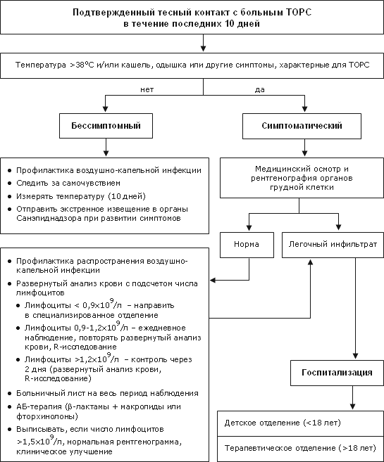
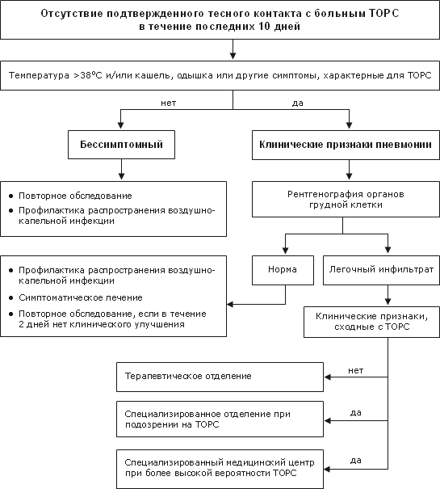

Алгоритм ведения пациентов при подозрении на ТОРС
Date: 2003-05-16 08:35:00
Topic: Инфекционные заболевания, клиника, диагностика и лечение
Алгоритмы ведения пациентов при подозрении на ТОРС (при неподтвержденном и подтвержденном контакте с больными ТОРС)
Алгоритмы ведения пациентов при подозрении на ТОРС


 PDF version (English) PDF version (English)
Guideline on management of severe acute respiratory syndrome (SARS)
Ho W.
Lancet 2003, 19; 361(9366): 1313-5
This article comes from Антибиотики и антимикробная терапия
http://antibiotic.ru/
The URL for this story is: http://antibiotic.ru/index.php?article=200 |
|
|